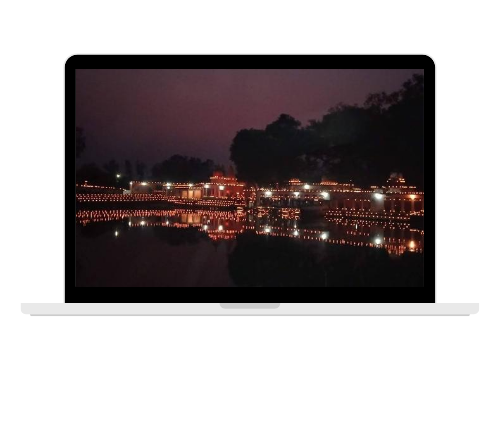
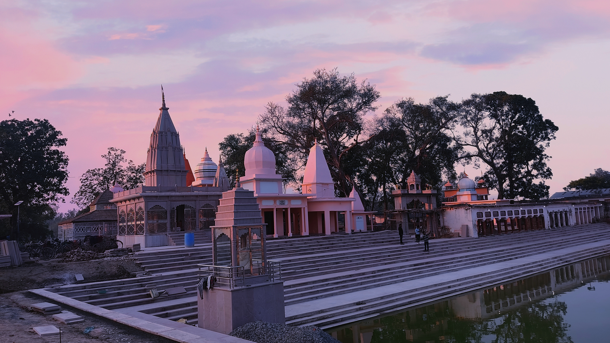

Shri Pauhari Baba
Welcome To The Official Website Of The Pauhari Baba Temple
You May Voluntarily Contribute Here For Shri Pauhari Baba Temple
Welcome To The Official Website Of The Pauhari Baba Temple
You May Voluntarily Contribute Here For Shri Pauhari Baba Temple


Welcome To The Official Website Of The Pauhari Baba Temple, Popularly Known As The Pauhari Baba Located
In Saraiya Ratnave Azamgarh. People Of All Racial, Religious, National , Are Welcomed To Pray And
Meditate Within Its Precincts.
The Pauhari baba Temple is located in the in Saraiya ratnave, Azamgarh UP . The parking facility is available for use. One can reach here by the following means.
Pauhari baba temple is 35 km away from Azamgarh, a distance of approximately one hours by car or an auto rickshaw.